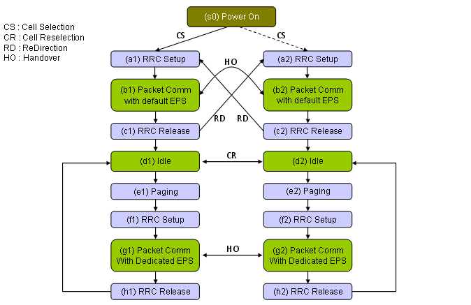

Handover Home : www.sharetechnote.com
Everybody who has experience with dealing with field trouble would know that this is never ending story, regardless of whether it is UE side issue or Network side issue.
This means that this technote will never be complete. I will be updated forever and you have to revisit this page forever as well -:)
- State Machine Overview
- Overview on Handover Process - LTE to LTE
- RRC Connection Reconfiguration for Target Cell Measurement
- RRC Connection Reconfiguration for Handover (Cell Change)
- LTE Measurement Report Trigger (EVENT for Measurement Report)
- Measurement GAP
- Layer 3 Filtering for Measurement Report
- Measurement with CGI report
- Examples of RRC Connection Reconfiguration (Measurement)
- Overview of CSFB (CS Fallback, LTE --> WCDMA)
The main topic on this page is to go through the state sequence (s0)->(a1)->(b1)->(c1)->(e1)->(f1)->(g1)->(g2). But other state transition sequence involving two cells will be treated as well.

Overview of Handover Process - LTE to LTE
The simplest way to define the word 'handover' would be "chaging the partner".
Who is chaning the partner ?
I meant "UE (Mobile Phone)".
Who is the parter in this case ?
I meant "Cell".
Therefore "Handover" is the process in which UE changes the cell.
Overall logic is simple and this process are the same (or at least very similar) in every technology.
i) A UE is in connection with a cell (let's call this 'Cell A').
ii) Now a situation that requires handover happened.
iii) Network send "signal quality measurement" command to UE for the garget cell ('Cell B') to which it will handover to.
iv) UE performance the measurement and report the "measurement result" to the network via the current cell (Cell A).
v) Network evaluate the measurement result reported by UE.
vi) If the evaluation result turns out to be good for handover, Network send 'Change Cell' command to UE.
vii) UE perform the cell change process.
viii) If cell change process is completed properly, UE send 'cell change completion' message to the network via the target cell (Cell B).
I used very generic term e.g, "signal quality measurement command", "measurement result", "Change Cell Command", "Cell Change Completion Message" etc. These generic commands can be translated to a specific jargon for each technology. For example, if I translate these for UMTS, they would be as follows :
"Signal quality measurement command" ==> Measurement Control
"Measurement Result" ==> Measurement Report
"Change Cell Command" ==> Physical Channel Reconfiguration or ActiveSetUpdate
"Cell Change Compeletion Message ==> Physical Channel Reconfiguration Complete or ActiveSetUpdateComplete
If you translate them into LTE jargon, they will be as follows.
"Signal quality measurement command" ==> RRC Connection Reconfiguration
"Measurement Result" ==> Measurement Report
"Change Cell Command" ==> RRC Connection Reconfiguration
"Cell Change Compeletion Message ==> RRC Connection Reconfiguration Complete
You may noticed that LTE is using the same message called "RRC Connection Reconfiguration" both for "Signal quality measurement command" and "Change Cell Command". How UE can tell whether it means "Signal quality measurement command" or "Change Cell Command" ?
Good question ! You will see the answer later.
Then you may have whole lots of questions. It is very good. The more questions you have, the more information you will get through this page.. (not now, in the future -: ) Following is a set of my personal questions.
i) you talked about "Signal Quality Measurement". What kind of signal quality UE has to measure ? Would it be a certain absolute value ? or a some relative value with reference to some other value ? or is it a special event changes ?
ii) How much time I can leave the current cell to perform the measurement for target cell ? (If the leave too long from the current cell to measure target cell, the call would drop. But if this time is too short, UE would not get correct measurement values).
iii) What if UE failed to performe the measurement or fail to find the target cell ?
iv) you talked about "Change Cell", how UE can change cell ? Just cut the connection with the current cell and reconnect to the target cell ? or is there any specific procedure ?
v) Cutting the connection from the current cell will be easy, but how can UE reconnect to target cell ?
vi) What if UE failed to reconnect to target cell after he cut off the connection with the current cell ?
This list would get longer and longer.
Now let's jump into detailed technical aspects of LTE handover. Following is the overall and simplest form of LTE-LTE handover procedure. (This sequence is based on 36.523 TC 8.2.4.2 and I modified the sequence a little bit for clear/easy understanding, hopefully -:). It means this is mainly for UE side aspect of Handover process.
|
Step |
Direction |
Message |
Target Cell |
Memo |
|
1 |
UE <---> SS |
< Power On and Registration > |
Cell 1 |
|
|
2 |
UE <---> SS |
< Now UE is in IDLE mode > |
Cell 1 |
|
|
3 |
UE <--- SS |
Paging |
Cell 1 |
|
|
4 |
UE ---> SS |
RRC Connection Request |
Cell 1 |
|
|
5 |
UE <--- SS |
RRC Connection Setup |
Cell 1 |
|
|
6 |
UE ---> SS |
RRC Connection Setup Complete |
Cell 1 |
|
|
7 |
UE <--- SS |
Security Mode Command |
Cell 1 |
|
|
8 |
UE ---> SS |
Security Mode Complete |
Cell 1 |
|
|
9 |
UE <--- SS |
RRC Connection Reconfiguration |
Cell 1 |
reactivating default EPS Bearer |
|
10 |
UE ---> SS |
RRCConnectionReconfigurationComplete |
Cell 1 |
|
|
11 |
UE <--- SS |
RRC Connection Reconfiguration |
Cell 1 |
Measurement Control for Target Cell |
|
12 |
UE ---> SS |
RRCConnectionReconfigurationComplete |
Cell 1 |
|
|
13 |
UE ---> SS |
Measurement Report |
Cell 1 |
|
|
14 |
UE <--- SS |
RRC Connection Reconfiguration |
Cell 1 |
Handover Command |
|
15 |
UE ---> SS |
PRACH |
Cell 2 |
|
|
16 |
UE <--- SS |
RACH Response |
Cell 2 |
|
|
17 |
UE ---> SS |
RRCConnectionReconfigurationComplete |
Cell 2 |
PASS/FAIL |
|
18 |
UE <--- SS |
ueCapabilityEnquiry |
Cell 2 |
|
|
19 |
UE ---> SS |
ueCapabilityInformation |
Cell 2 |
|
|
20 |
UE ---> SS |
ulInformationTransfer + Detach Request |
Cell 2 |
|
|
21 |
UE <--- SS |
RRC Connection Release |
Cell 2 |
|
Now let's dig into some of the critical steps of this handover process. I will start with radio message for these critical steps and put additional comments as time goes a long.
RRC Connection Reconfiguration for Target Cell Measurement (Step 11)
I will add more comments later, but for now let's just look into the contents of this message. As you see in the parts marked in red, most part of this message about measurement.
Actual message for the measurement would not be as complicated as this one (may be longer due to the long list of cells to be measured), but I enabled almost every information elements for the reference. Especially understanding the Quantity Configuration parameters would take very long for you to understand in details and would be the main source of problems you will have in field test and field troubleshoot.
DL-DCCH-Message ::= SEQUENCE
+-message ::= CHOICE [c1]
+-c1 ::= CHOICE [rrcConnectionReconfiguration]
+-rrcConnectionReconfiguration ::= SEQUENCE
+-rrc-TransactionIdentifier ::= INTEGER (0..3) [0]
+-criticalExtensions ::= CHOICE [c1]
+-c1 ::= CHOICE [rrcConnectionReconfiguration-r8]
+-rrcConnectionReconfiguration-r8 ::= SEQUENCE [100000]
+-measConfig ::= SEQUENCE [01010111111] OPTIONAL:Exist
| +-measObjectToRemoveList ::= SEQUENCE OF OPTIONAL:Omit
| +-measObjectToAddModList ::= SEQUENCE OF SIZE(1..maxObjectId[32]) [1]
| | +-MeasObjectToAddMod ::= SEQUENCE
| | +-measObjectId ::= INTEGER (1..maxObjectId[32]) [1]
| | +-measObject ::= CHOICE [measObjectEUTRA]
| | +-measObjectEUTRA ::= SEQUENCE [100000]
| | +-carrierFreq ::= INTEGER (0..maxEARFCN[65535]) [6300]
| | +-allowedMeasBandwidth ::= ENUMERATED [mbw25]
| | +-presenceAntennaPort1 ::= BOOLEAN [FALSE]
| | +-neighCellConfig ::= BIT STRING SIZE(2) [01]
| | +-offsetFreq ::= ENUMERATED [dB0] OPTIONAL:Exist
| | +-cellsToRemoveList ::= SEQUENCE OF OPTIONAL:Omit
| | +-cellsToAddModList ::= SEQUENCE OF OPTIONAL:Omit
| | +-blackCellsToRemoveList ::= SEQUENCE OF OPTIONAL:Omit
| | +-blackCellsToAddModList ::= SEQUENCE OF OPTIONAL:Omit
| | +-cellForWhichToReportCGI ::= INTEGER OPTIONAL:Omit
| +-reportConfigToRemoveList ::= SEQUENCE OF OPTIONAL:Omit
| +-reportConfigToAddModList ::= SEQUENCE OF SIZE(1..maxReportConfigId[32]) [1]
| | +-ReportConfigToAddMod ::= SEQUENCE
| | +-reportConfigId ::= INTEGER (1..maxReportConfigId[32]) [1]
| | +-reportConfig ::= CHOICE [reportConfigEUTRA]
| | +-reportConfigEUTRA ::= SEQUENCE
| | +-triggerType ::= CHOICE [event]
| | | +-event ::= SEQUENCE
| | | +-eventId ::= CHOICE [eventA3]
| | | | +-eventA3 ::= SEQUENCE
| | | | +-a3-Offset ::= INTEGER (-30..30) [0]
| | | | +-reportOnLeave ::= BOOLEAN [FALSE]
| | | +-hysteresis ::= INTEGER (0..30) [0]
| | | +-timeToTrigger ::= ENUMERATED [ms640]
| | +-triggerQuantity ::= ENUMERATED [rsrp]
| | +-reportQuantity ::= ENUMERATED [both]
| | +-maxReportCells ::= INTEGER (1..maxCellReport[8]) [1]
| | +-reportInterval ::= ENUMERATED [ms1024]
| | +-reportAmount ::= ENUMERATED [r1]
| +-measIdToRemoveList ::= SEQUENCE OF OPTIONAL:Omit
| +-measIdToAddModList ::= SEQUENCE OF SIZE(1..maxMeasId[32]) [1] OPTIONAL:Exist
| | +-MeasIdToAddMod ::= SEQUENCE
| | +-measId ::= INTEGER (1..maxMeasId[32]) [1]
| | +-measObjectId ::= INTEGER (1..maxObjectId[32]) [1]
| | +-reportConfigId ::= INTEGER (1..maxReportConfigId[32]) [1]
| +-quantityConfig ::= SEQUENCE [1111] OPTIONAL:Exist
| | +-quantityConfigEUTRA ::= SEQUENCE [11] OPTIONAL:Exist
| | | +-filterCoefficientRSRP ::= ENUMERATED [fc0] OPTIONAL:Exist
| | | +-filterCoefficientRSRQ ::= ENUMERATED [fc0] OPTIONAL:Exist
| | +-quantityConfigUTRA ::= SEQUENCE [1] OPTIONAL:Exist
| | | +-measQuantityUTRA-FDD ::= ENUMERATED [cpich-RSCP]
| | | +-measQuantityUTRA-TDD ::= ENUMERATED [pccpch-RSCP]
| | | +-filterCoefficient ::= ENUMERATED [fc0] OPTIONAL:Exist
| | +-quantityConfigGERAN ::= SEQUENCE [1] OPTIONAL:Exist
| | | +-measQuantityGERAN ::= ENUMERATED [rssi]
| | | +-filterCoefficient ::= ENUMERATED [fc0] OPTIONAL:Exist
| | +-quantityConfigCDMA2000 ::= SEQUENCE OPTIONAL:Exist
| | +-measQuantityCDMA2000 ::= ENUMERATED [pilotStrength]
| +-measGapConfig ::= CHOICE [release] OPTIONAL:Exist
| | +-release ::= NULL
| +-s-Measure ::= INTEGER (0..97) [0] OPTIONAL:Exist
| +-preRegistrationInfoHRPD ::= SEQUENCE [11] OPTIONAL:Exist
| | +-preRegistrationAllowed ::= BOOLEAN [FALSE]
| | +-preRegistrationZoneId ::= INTEGER (0..255) [0] OPTIONAL:Exist
| | +-secondaryPreRegistrationZoneIdList ::= SEQUENCE OF SIZE(1..2) [1]
| | +-PreRegistrationZoneIdHRPD ::= INTEGER (0..255) [0]
| +-speedStatePars ::= CHOICE [setup] OPTIONAL:Exist
| +-setup ::= SEQUENCE
| +-mobilityStateParameters ::= SEQUENCE
| | +-t-Evaluation ::= ENUMERATED [s30]
| | +-t-HystNormal ::= ENUMERATED [s30]
| | +-n-CellChangeMedium ::= INTEGER (1..16) [1]
| | +-n-CellChangeHigh ::= INTEGER (1..16) [1]
| +-timeToTrigger-SF ::= SEQUENCE
| +-sf-Medium ::= ENUMERATED [oDot25]
| +-sf-High ::= ENUMERATED [oDot25]
+-mobilityControlInfo ::= SEQUENCE OPTIONAL:Omit
+-dedicatedInfoNASList ::= SEQUENCE OF OPTIONAL:Omit
+-radioResourceConfigDedicated ::= SEQUENCE OPTIONAL:Omit
+-securityConfigHO ::= SEQUENCE OPTIONAL:Omit
+-nonCriticalExtension ::= SEQUENCE OPTIONAL:Omit
RRC Connection Reconfiguration for Cell Change (Step 14)
I will add more comments later, but for now let's just look into the contents of this message. As you see in the parts marked in red, most part of this message about measurement. As you see in the part marked red, major part of this message is 'mobilityControlInfo' IE and 'securityConfigHO'.
'mobilityControlInfo' tells UE about the frequency of target cell and various physical channel configuration and RACH procedure information about the target cell. In short, this IE (information element) carries the most of SIB2 information of target cell.
+-c1 ::= CHOICE [rrcConnectionReconfiguration-r8]
+-rrcConnectionReconfiguration-r8 ::= SEQUENCE [010110]
+-measConfig ::= SEQUENCE OPTIONAL:Omit
+-mobilityControlInfo ::= SEQUENCE [1000] OPTIONAL:Exist
| +-targetPhysCellId ::= INTEGER (0..503) [2]
| +-carrierFreq ::= SEQUENCE [1] OPTIONAL:Exist
| | +-dl-CarrierFreq ::= INTEGER (0..maxEARFCN[65535]) [6300]
| | +-ul-CarrierFreq ::= INTEGER (0..maxEARFCN[65535]) [24300] OPTIONAL:Exist
| +-carrierBandwidth ::= SEQUENCE OPTIONAL:Omit
| +-additionalSpectrumEmission ::= INTEGER OPTIONAL:Omit
| +-t304 ::= ENUMERATED [ms1000]
| +-newUE-Identity ::= BIT STRING SIZE(16) [0001000000110100]
| +-radioResourceConfigCommon ::= SEQUENCE [100010000]
| | +-rach-ConfigCommon ::= SEQUENCE OPTIONAL:Exist
| | | +-preambleInfo ::= SEQUENCE [0]
| | | | +-numberOfRA-Preambles ::= ENUMERATED [n52]
| | | | +-preamblesGroupAConfig ::= SEQUENCE OPTIONAL:Omit
| | | +-powerRampingParameters ::= SEQUENCE
| | | | +-powerRampingStep ::= ENUMERATED [dB2]
| | | | +-preambleInitialReceivedTargetPower ::= ENUMERATED [dBm-104]
| | | +-ra-SupervisionInfo ::= SEQUENCE
| | | | +-preambleTransMax ::= ENUMERATED [n6]
| | | | +-ra-ResponseWindowSize ::= ENUMERATED [sf10]
| | | | +-mac-ContentionResolutionTimer ::= ENUMERATED [sf48]
| | | +-maxHARQ-Msg3Tx ::= INTEGER (1..8) [4]
| | +-prach-Config ::= SEQUENCE [1]
| | | +-rootSequenceIndex ::= INTEGER (0..837) [86]
| | | +-prach-ConfigInfo ::= SEQUENCE OPTIONAL:Exist
| | | +-prach-ConfigIndex ::= INTEGER (0..63) [3]
| | | +-highSpeedFlag ::= BOOLEAN [FALSE]
| | | +-zeroCorrelationZoneConfig ::= INTEGER (0..15) [5]
| | | +-prach-FreqOffset ::= INTEGER (0..94) [2]
| | +-pdsch-ConfigCommon ::= SEQUENCE OPTIONAL:Omit
| | +-pusch-ConfigCommon ::= SEQUENCE
| | | +-pusch-ConfigBasic ::= SEQUENCE
| | | | +-n-SB ::= INTEGER (1..4) [1]
| | | | +-hoppingMode ::= ENUMERATED [interSubFrame]
| | | | +-pusch-HoppingOffset ::= INTEGER (0..98) [4]
| | | | +-enable64QAM ::= BOOLEAN [FALSE]
| | | +-ul-ReferenceSignalsPUSCH ::= SEQUENCE
| | | +-groupHoppingEnabled ::= BOOLEAN [TRUE]
| | | +-groupAssignmentPUSCH ::= INTEGER (0..29) [0]
| | | +-sequenceHoppingEnabled ::= BOOLEAN [FALSE]
| | | +-cyclicShift ::= INTEGER (0..7) [0]
| | +-phich-Config ::= SEQUENCE OPTIONAL:Omit
| | +-pucch-ConfigCommon ::= SEQUENCE OPTIONAL:Omit
| | +-soundingRS-UL-ConfigCommon ::= CHOICE [setup] OPTIONAL:Exist
| | | +-setup ::= SEQUENCE [0]
| | | +-srs-BandwidthConfig ::= ENUMERATED [bw3]
| | | +-srs-SubframeConfig ::= ENUMERATED [sc0]
| | | +-ackNackSRS-SimultaneousTransmission ::= BOOLEAN [TRUE]
| | | +-srs-MaxUpPts ::= ENUMERATED OPTIONAL:Omit
| | +-uplinkPowerControlCommon ::= SEQUENCE OPTIONAL:Omit
| | +-antennaInfoCommon ::= SEQUENCE OPTIONAL:Omit
| | +-p-Max ::= INTEGER OPTIONAL:Omit
| | +-tdd-Config ::= SEQUENCE OPTIONAL:Omit
| | +-ul-CyclicPrefixLength ::= ENUMERATED [len1]
| +-rach-ConfigDedicated ::= SEQUENCE OPTIONAL:Omit
+-dedicatedInfoNASList ::= SEQUENCE OF OPTIONAL:Omit
+-radioResourceConfigDedicated ::= SEQUENCE [000001] OPTIONAL:Exist
| +-srb-ToAddModList ::= SEQUENCE OF OPTIONAL:Omit
| +-drb-ToAddModList ::= SEQUENCE OF OPTIONAL:Omit
| +-drb-ToReleaseList ::= SEQUENCE OF OPTIONAL:Omit
| +-mac-MainConfig ::= CHOICE OPTIONAL:Omit
| +-sps-Config ::= SEQUENCE OPTIONAL:Omit
| +-physicalConfigDedicated ::= SEQUENCE [0000111111] OPTIONAL:Exist
| +-pdsch-ConfigDedicated ::= SEQUENCE OPTIONAL:Omit
| +-pucch-ConfigDedicated ::= SEQUENCE OPTIONAL:Omit
| +-pusch-ConfigDedicated ::= SEQUENCE OPTIONAL:Omit
| +-uplinkPowerControlDedicated ::= SEQUENCE OPTIONAL:Omit
| +-tpc-PDCCH-ConfigPUCCH ::= CHOICE [setup] OPTIONAL:Exist
| | +-setup ::= SEQUENCE
| | +-tpc-RNTI ::= BIT STRING SIZE(16) [0000001111111111]
| | +-tpc-Index ::= CHOICE [indexOfFormat3]
| | +-indexOfFormat3 ::= INTEGER (1..15) [1]
| +-tpc-PDCCH-ConfigPUSCH ::= CHOICE [setup] OPTIONAL:Exist
| | +-setup ::= SEQUENCE
| | +-tpc-RNTI ::= BIT STRING SIZE(16) [0000000111111010]
| | +-tpc-Index ::= CHOICE [indexOfFormat3]
| | +-indexOfFormat3 ::= INTEGER (1..15) [1]
| +-cqi-ReportConfig ::= SEQUENCE [11] OPTIONAL:Exist
| | +-cqi-ReportModeAperiodic ::= ENUMERATED [rm30] OPTIONAL:Exist
| | +-nomPDSCH-RS-EPRE-Offset ::= INTEGER (-1..6) [0]
| | +-cqi-ReportPeriodic ::= CHOICE [setup] OPTIONAL:Exist
| | +-setup ::= SEQUENCE [1]
| | +-cqi-PUCCH-ResourceIndex ::= INTEGER (0..1185) [0]
| | +-cqi-pmi-ConfigIndex ::= INTEGER (0..1023) [25]
| | +-cqi-FormatIndicatorPeriodic ::= CHOICE [widebandCQI]
| | | +-widebandCQI ::= NULL
| | +-ri-ConfigIndex ::= INTEGER (0..1023) [483] OPTIONAL:Exist
| | +-simultaneousAckNackAndCQI ::= BOOLEAN [FALSE]
| +-soundingRS-UL-ConfigDedicated ::= CHOICE [setup] OPTIONAL:Exist
| | +-setup ::= SEQUENCE
| | +-srs-Bandwidth ::= ENUMERATED [bw0]
| | +-srs-HoppingBandwidth ::= ENUMERATED [hbw0]
| | +-freqDomainPosition ::= INTEGER (0..23) [0]
| | +-duration ::= BOOLEAN [TRUE]
| | +-srs-ConfigIndex ::= INTEGER (0..1023) [20]
| | +-transmissionComb ::= INTEGER (0..1) [0]
| | +-cyclicShift ::= ENUMERATED [cs0]
| +-antennaInfo ::= CHOICE [defaultValue] OPTIONAL:Exist
| | +-defaultValue ::= NULL
| +-schedulingRequestConfig ::= CHOICE [setup] OPTIONAL:Exist
| +-setup ::= SEQUENCE
| +-sr-PUCCH-ResourceIndex ::= INTEGER (0..2047) [20]
| +-sr-ConfigIndex ::= INTEGER (0..155) [30]
| +-dsr-TransMax ::= ENUMERATED [n4]
+-securityConfigHO ::= SEQUENCE OPTIONAL:Exist
| +-handoverType ::= CHOICE [intraLTE]
| +-intraLTE ::= SEQUENCE [0]
| +-securityAlgorithmConfig ::= SEQUENCE OPTIONAL:Omit
| +-keyChangeIndicator ::= BOOLEAN [FALSE]
| +-nextHopChainingCount ::= INTEGER (0..7) [0]
+-nonCriticalExtension ::= SEQUENCE OPTIONAL:Omit
LTE Measurement Report Trigger (EVENT for Measurement Report)
One of the most important step for Handover is Measurement Report from UE before the handover. Network make a decision on whether it will let UE handover or not, based on the measurement value from UE. There are many different measurement items and many different ways to measure the signal quality of the current cell (serving cell) and target cell.
Ideally a network let UE to report the signal quality (usually RSRP) of the current cell (serving cell) and target cell and set the arbitrary rule for handover. But this can be too complicated and too much load on network since the network may need a multiple times of consecutive measurement result in stead of using only a single or a couple of measured signal quality value (Can you think of why only one or a couple of signal quality measurement (RSRP) would not be a good enough for this kind of decision making ?).
As a kind of solution, 3GPP defines several set of predefined set of measurement report mechanism to be performed by UE. These predefined measurement report type is called "Event". What kind of "event" a UE has to report is specified by RRC Connection Reconfiguration message as follows (shown in red).
+-rrcConnectionReconfiguration ::= SEQUENCE
+-rrc-TransactionIdentifier ::= INTEGER (0..3) [0]
+-criticalExtensions ::= CHOICE [c1]
+-c1 ::= CHOICE [rrcConnectionReconfiguration-r8]
+-rrcConnectionReconfiguration-r8 ::= SEQUENCE [100000]
+-measConfig ::= SEQUENCE [01010111111] OPTIONAL:Exist
| +-measObjectToRemoveList ::= SEQUENCE OF OPTIONAL:Omit
| +-measObjectToAddModList ::= SEQUENCE OF SIZE(1..maxObjectId[32]) [1]
| | +-MeasObjectToAddMod ::= SEQUENCE
| | +-measObjectId ::= INTEGER (1..maxObjectId[32]) [1]
| | +-measObject ::= CHOICE [measObjectEUTRA]
| | +-measObjectEUTRA ::= SEQUENCE [100000]
| | +-carrierFreq ::= INTEGER (0..maxEARFCN[65535]) [6300]
| | +-allowedMeasBandwidth ::= ENUMERATED [mbw25]
| | +-presenceAntennaPort1 ::= BOOLEAN [FALSE]
| | +-neighCellConfig ::= BIT STRING SIZE(2) [01]
| | +-offsetFreq ::= ENUMERATED [dB0] OPTIONAL:Exist
| | +-cellsToRemoveList ::= SEQUENCE OF OPTIONAL:Omit
| | +-cellsToAddModList ::= SEQUENCE OF OPTIONAL:Omit
| | +-blackCellsToRemoveList ::= SEQUENCE OF OPTIONAL:Omit
| | +-blackCellsToAddModList ::= SEQUENCE OF OPTIONAL:Omit
| | +-cellForWhichToReportCGI ::= INTEGER OPTIONAL:Omit
| +-reportConfigToRemoveList ::= SEQUENCE OF OPTIONAL:Omit
| +-reportConfigToAddModList ::= SEQUENCE OF SIZE(1..maxReportConfigId[32]) [1]
| | +-ReportConfigToAddMod ::= SEQUENCE
| | +-reportConfigId ::= INTEGER (1..maxReportConfigId[32]) [1]
| | +-reportConfig ::= CHOICE [reportConfigEUTRA]
| | +-reportConfigEUTRA ::= SEQUENCE
| | +-triggerType ::= CHOICE [event]
| | | +-event ::= SEQUENCE
| | | +-eventId ::= CHOICE [eventA3]
| | | | +-eventA3 ::= SEQUENCE
| | | | +-a3-Offset ::= INTEGER (-30..30) [0]
| | | | +-reportOnLeave ::= BOOLEAN [FALSE]
| | | +-hysteresis ::= INTEGER (0..30) [0]
| | | +-timeToTrigger ::= ENUMERATED [ms640]
| | +-triggerQuantity ::= ENUMERATED [rsrp]
| | +-reportQuantity ::= ENUMERATED [both]
| | +-maxReportCells ::= INTEGER (1..maxCellReport[8]) [1]
| | +-reportInterval ::= ENUMERATED [ms1024]
| | +-reportAmount ::= ENUMERATED [r1]
Brief description you can find from 3GPP 36.331 5.5.4 Measurement report triggering is as follows. You will see pretty complicated description of the exact procedure of each of these events, but if you convert those descriptions into a graphical format it would be much easier/intuitive to understand the nature of these events. (http://www.slideshare.net/Leliwa/lte-measurement-events-4095274 did an excellent job for you).
|
Event Type |
Description |
|
Event A1 |
Serving becomes better than threshold |
|
Event A2 |
Serving becomes worse than threshold |
|
Event A3 |
Neighbour becomes offset better than serving |
|
Event A4 |
Neighbour becomes better than threshold |
|
Event A5 |
Serving becomes worse than threshold1 and neighbour becomes better than threshold2 |
|
Event B1 |
Inter RAT neighbour becomes better than threshold |
|
Event B2 |
Serving becomes worse than threshold1 and inter RAT neighbour becomes better than threshold2 |
Before the handover, UE normally measure the cell power (signal quality) of the target cell and report it to the network, so that network can make a decision whether to allow UE to handover to the target cell or not.
It is not a big issue to measure the signal quality of the target cell if the target cell is at the same frequency as the current cell (Intrafrequency measurement). But there would be an issue when the target cell is at a different frequency from the current cell (Interfrequency measurement). Just in terms of logical sense of view, the simplest solution for Interfrequency measurement, the simplest solution for this would be to implement two RF tranciever on UE. However, there are some practical problems with this kind of two tranciever solution. One of the problems is cost issue. It would require additional cost to implement the additional tranciever. The other problem would be the possible interference between the current frequency and target frequency especially when the current frequency and target frequency are close to each other.
So they come out with a special techique called "Measurement GAP". This is the same concept as "Compressed Mode" in UMTS. The idea of the Measurement GAP is to create a small gap during which no transmission and reception happens. since there is no signal transmission and reception during the gap, UE can switch to the target cell and perform the signal quality measurement and come back to the current cell.
To make this work seamlessly, there should be a well established agreement between UE and Network about the gap definition (e.g, Starting Position of the Gap, Gap length, number of Gaps etc) and this agreement is established by MeasGapConfig IE of RRC Connection Reconfiguration message. If you see this part, RRC contents is small but you need to go through several steps as follows to fully understand the implementation of the measurement GAP. (The spreadsheet shown at the bottom is here. Let me know if you find any problem with this spreadsheet).
One of the complications about the measurement GAP would be how to schedule data transmission around the gap. Situation would be more complicated than you may think because we have to think about not only the data transmission itself, but also the scheduling grant and ACK/NACK transmission. One of possible scheduling example around measurement gap is as follows.
Layer 3 Filtering for Measurement Report
To be honest, I've never paid attention to this parameter before, but lately I heard an apisode of a serious field problem (too frequent handover failure) which was caused by a wrong implementation of this filter. It is the motivation for me to look into this parameter.
It is about the parameter for Layer 3 filtering for the measurement report value which is specified in rrcConnectionReconfiguration as specified below (in blue)
+-rrcConnectionReconfiguration-r8 ::= SEQUENCE [100000]
+-measConfig ::= SEQUENCE [01010111111] OPTIONAL:Exist
| +-measObjectToRemoveList ::= SEQUENCE OF OPTIONAL:Omit
| +-measObjectToAddModList ::= SEQUENCE OF SIZE(1..maxObjectId[32]) [1]
| | +-MeasObjectToAddMod ::= SEQUENCE
| | +-measObjectId ::= INTEGER (1..maxObjectId[32]) [1]
| | +-measObject ::= CHOICE [measObjectEUTRA]
| +-reportConfigToRemoveList ::= SEQUENCE OF OPTIONAL:Omit
| +-reportConfigToAddModList ::= SEQUENCE OF SIZE(1..maxReportConfigId[32]) [1]
| | +-ReportConfigToAddMod ::= SEQUENCE
| | +-reportConfigId ::= INTEGER (1..maxReportConfigId[32]) [1]
| | +-reportConfig ::= CHOICE [reportConfigEUTRA]
| | +-reportConfigEUTRA ::= SEQUENCE
| | +-triggerType ::= CHOICE [event]
| | | +-event ::= SEQUENCE
| | | +-eventId ::= CHOICE [eventA3]
| | | | +-eventA3 ::= SEQUENCE
| | | | +-a3-Offset ::= INTEGER (-30..30) [0]
| | | | +-reportOnLeave ::= BOOLEAN [FALSE]
| | | +-hysteresis ::= INTEGER (0..30) [0]
| | | +-timeToTrigger ::= ENUMERATED [ms640]
| | +-triggerQuantity ::= ENUMERATED [rsrp]
| | +-reportQuantity ::= ENUMERATED [both]
| | +-maxReportCells ::= INTEGER (1..maxCellReport[8]) [1]
| | +-reportInterval ::= ENUMERATED [ms1024]
| | +-reportAmount ::= ENUMERATED [r1]
| +-measIdToRemoveList ::= SEQUENCE OF OPTIONAL:Omit
| +-measIdToAddModList ::= SEQUENCE OF SIZE(1..maxMeasId[32]) [1] OPTIONAL:Exist
| | +-MeasIdToAddMod ::= SEQUENCE
| | +-measId ::= INTEGER (1..maxMeasId[32]) [1]
| | +-measObjectId ::= INTEGER (1..maxObjectId[32]) [1]
| | +-reportConfigId ::= INTEGER (1..maxReportConfigId[32]) [1]
| +-quantityConfig ::= SEQUENCE [1111] OPTIONAL:Exist
| | +-quantityConfigEUTRA ::= SEQUENCE [11] OPTIONAL:Exist
| | | +-filterCoefficientRSRP ::= ENUMERATED [fc0] OPTIONAL:Exist
| | | +-filterCoefficientRSRQ ::= ENUMERATED [fc0] OPTIONAL:Exist
fc0 in filterCoefficientRSRP IE means "Do not apply Layer 3 filter and report the raw measured data". If filterCoefficientRSRP use a value other than fc0, it means "Apply Layer 3 filter with the specified the coefficient". The filter function and the meaning of each parameter is defined in 3GPP 36.331 5.5.3.2 Layer 3 filtering as follows.
There is a special type of Measurement Report. Normally Measurement Control/Report is for detecting the signal strength of the target cell, but CGI report is not for measuring the signal strength. It is to detect the Cell ID. It is not a simple cell ID, it is to measure CGI (Cell Global Identity) which uniquely identifies a cell in the whole world.
For a ordinary measurement report, UE only have to switch its tuner to target cell and measure the signal strength and it does not have to decode any MIB, SIB of the target cell. It would take very short time to measure the signal strength. But it is different story in case of CGI. CGI is made up of PLMN + LAC + Cell ID. It means UE has to decode MIB/SIBs of the target cell.
Decoding MIB/SIB is not a big issue if it is in idle mode, but the problem is that measurement control/report should happen in Connected Mode. Measurement GAP in LTE would not give enough time for UE to decode MIB/SIBs of the target cell.
Then how can we give UE enough time to measure MIB/SIBs of target cell in connected mode. You can use DRX for this. Using DRX, you can give UE time long enough to measure MIB/SIBs of target cell.
One think you have to be careful about DRX is that you have to make it sure that network should not send any data or UL Grant during the drx cycle. In case of measurement gap, measurement gap has high priority than data transmission/reception, but in DRX data transmission or handling UL grant has higher priority than DRX. It means if UE has any DL data or UL Grant during onTime of DRX cycle it does not goes into OFF period for a certain duration. If network keep sending data or UL grant during the DRX cycle (see DRX page for details), UE can never gets into OFF period meaning it cannot have time to switch to target cell for CGI detection. In this case, UE would still send Measurement Report but cgi-info field would be missing in the report.
Following is one example of RRC Connection Reconfiguration for CGI Report measurement control. See if my description above is properly reflecting the real message. For the details of this message, refer to following tables from 36.521-1.
- Table 8.3.3.2.3.3-7: RRCConnectionReconfiguration (step 5, Table 8.3.3.2.3.2-2)
- Table 8.3.3.2.3.3-8 MeasConfig (step 5, Table 8.3.3.2.3.2-2)
- Table 8.3.3.2.3.3-9: MeasObjectUTRA-CGI (step 5, Table 8.3.3.2.3.2-2)
- Table 8.3.3.2.3.3-10: ReportConfigUTRA-CGI (step 5, Table 8.3.3.2.3.2-2)
- Table 8.3.3.2.3.3-11: RadioResourceConfigDedicated-DRX (step 5, Table 8.3.3.2.3.2-2)

Following is one example of Measurement Report that UE reported.
Examples of Measurement - Measuring RSRP, RSRQ for current Cell
Following is an example for RRC Connection Reconfiguration (Measurement) for the current cell (Serving Cell). You would notice that we don't need to configure anything about MeasurementGap since UE does not have to jump to other frequencies for the measurement.
+-c1 ::= CHOICE [rrcConnectionReconfiguration]
+-rrcConnectionReconfiguration ::= SEQUENCE
+-rrc-TransactionIdentifier ::= INTEGER (0..3) [0]
+-criticalExtensions ::= CHOICE [c1]
+-c1 ::= CHOICE [rrcConnectionReconfiguration-r8]
+-rrcConnectionReconfiguration-r8 ::= SEQUENCE [100000]
+-measConfig ::= SEQUENCE [01010110000] OPTIONAL:Exist
| +-measObjectToRemoveList ::= SEQUENCE OF OPTIONAL:Omit
| +-measObjectToAddModList ::= SEQUENCE OF SIZE(1..maxObjectId[32]) [1] OPTIONAL:Exist
| | +-MeasObjectToAddMod ::= SEQUENCE
| | +-measObjectId ::= INTEGER (1..maxObjectId[32]) [1]
| | +-measObject ::= CHOICE [measObjectEUTRA]
| | +-measObjectEUTRA ::= SEQUENCE [001000]
| | +-carrierFreq ::= INTEGER (0..maxEARFCN[65535]) [2175]
| | +-allowedMeasBandwidth ::= ENUMERATED [mbw50]
| | +-presenceAntennaPort1 ::= BOOLEAN [FALSE]
| | +-neighCellConfig ::= BIT STRING SIZE(2) [00]
| | +-offsetFreq ::= ENUMERATED OPTIONAL:Omit
| | +-cellsToRemoveList ::= SEQUENCE OF OPTIONAL:Omit
| | +-cellsToAddModList ::= SEQUENCE OF SIZE(1..maxCellMeas[32]) [1] OPTIONAL:Exist
| | | +-CellsToAddMod ::= SEQUENCE
| | | +-cellIndex ::= INTEGER (1..maxCellMeas[32]) [1]
| | | +-physCellId ::= INTEGER (0..503) [0]
| | | +-cellIndividualOffset ::= ENUMERATED [dB-24]
| | +-blackCellsToRemoveList ::= SEQUENCE OF OPTIONAL:Omit
| | +-blackCellsToAddModList ::= SEQUENCE OF OPTIONAL:Omit
| | +-cellForWhichToReportCGI ::= INTEGER OPTIONAL:Omit
| +-reportConfigToRemoveList ::= SEQUENCE OF OPTIONAL:Omit
| +-reportConfigToAddModList ::= SEQUENCE OF SIZE(1..maxReportConfigId[32]) [1] OPTIONAL:Exist
| | +-ReportConfigToAddMod ::= SEQUENCE
| | +-reportConfigId ::= INTEGER (1..maxReportConfigId[32]) [1]
| | +-reportConfig ::= CHOICE [reportConfigEUTRA]
| | +-reportConfigEUTRA ::= SEQUENCE
| | +-triggerType ::= CHOICE [periodical]
| | | +-periodical ::= SEQUENCE
| | | +-purpose ::= ENUMERATED [reportStrongestCells]
| | +-triggerQuantity ::= ENUMERATED [rsrp]
| | +-reportQuantity ::= ENUMERATED [both]
| | +-maxReportCells ::= INTEGER (1..maxCellReport[8]) [1]
| | +-reportInterval ::= ENUMERATED [ms480]
| | +-reportAmount ::= ENUMERATED [infinity]
| +-measIdToRemoveList ::= SEQUENCE OF OPTIONAL:Omit
| +-measIdToAddModList ::= SEQUENCE OF SIZE(1..maxMeasId[32]) [1] OPTIONAL:Exist
| | +-MeasIdToAddMod ::= SEQUENCE
| | +-measId ::= INTEGER (1..maxMeasId[32]) [1]
| | +-measObjectId ::= INTEGER (1..maxObjectId[32]) [1]
| | +-reportConfigId ::= INTEGER (1..maxReportConfigId[32]) [1]
| +-quantityConfig ::= SEQUENCE [1000] OPTIONAL:Exist
| | +-quantityConfigEUTRA ::= SEQUENCE [11] OPTIONAL:Exist
| | | +-filterCoefficientRSRP ::= ENUMERATED [fc4] OPTIONAL:Exist
| | | +-filterCoefficientRSRQ ::= ENUMERATED [fc4] OPTIONAL:Exist
| | +-quantityConfigUTRA ::= SEQUENCE OPTIONAL:Omit
| | +-quantityConfigGERAN ::= SEQUENCE OPTIONAL:Omit
| | +-quantityConfigCDMA2000 ::= SEQUENCE OPTIONAL:Omit
| +-measGapConfig ::= CHOICE OPTIONAL:Omit
| +-s-Measure ::= INTEGER OPTIONAL:Omit
| +-preRegistrationInfoHRPD ::= SEQUENCE OPTIONAL:Omit
| +-speedStatePars ::= CHOICE OPTIONAL:Omit
+-mobilityControlInfo ::= SEQUENCE OPTIONAL:Omit
+-dedicatedInfoNASList ::= SEQUENCE OF OPTIONAL:Omit
+-radioResourceConfigDedicated ::= SEQUENCE OPTIONAL:Omit
+-securityConfigHO ::= SEQUENCE OPTIONAL:Omit
+-nonCriticalExtension ::= SEQUENCE OPTIONAL:Omit
An example of Measurement Report for the measurement configuration specified above is as follows.
+-c1 ::= CHOICE [measurementReport]
+-measurementReport ::= SEQUENCE
+-criticalExtensions ::= CHOICE [c1]
+-c1 ::= CHOICE [measurementReport-r8]
+-measurementReport-r8 ::= SEQUENCE [0]
+-measResults ::= SEQUENCE [0]
| +-measId ::= INTEGER (1..maxMeasId[32]) [1]
| +-measResultServCell ::= SEQUENCE
| | +-rsrpResult ::= INTEGER (0..97) [52]
| | +-rsrqResult ::= INTEGER (0..34) [18]
| +-measResultNeighCells ::= CHOICE OPTIONAL:Omit
+-nonCriticalExtension ::= SEQUENCE OPTIONAL:Omit
Overview of CSFB (CS Fallback, LTE --> WCDMA)
Before you go through this, I recommend you to read through CS Fallback section of LTE Quick Reference if you are totally new to the concept of CS Fallback.
There are several variations in CS Fallback.
i) Somebody make a voice call to you when you are in <Idle in LTE>. (CSFB is triggered by Paging message)
ii) You make a voice call when you are in <Idle in LTE>
iii) Somebody make a voice call to you while you are in <Connected Mode in LTE> and you switch to a legacy network by Redirection.
iv) Somebody make a voice call to you while you are in <Connected Mode in LTE> and you switch to a legacy network by Handover.
v) You make a voice call when you are in <Connected Mode in LTE> and you switch to a legacy network by Redirection.
vi) You make a voice call when you are in <Connected Mode in LTE> and you switch to a legacy network by Handover.
Following is an example of CS Fallback from LTE to WCDMA Voice Call. You will get some detailed information that was not posted in the Quick Reference Page. (This is for case iii) listed above)
|
Step |
Direction |
Message |
Target Cell |
Memo |
|
1 |
UE <---> SS |
< Power On > |
Cell 1 |
|
|
2 |
UE <---> SS |
< PRACH and RACH Response > |
Cell 1 |
|
|
3 |
UE ---> SS |
RRC Connection Request |
Cell 1 |
|
|
4 |
UE <--- SS |
RRC Connection Setup |
Cell 1 |
|
|
5 |
UE ---> SS |
RRC Connection Setup Complete + Attach Request + PDN Conn Req |
Cell 1 |
|
|
6 |
UE <---> SS |
< NAS : Security Mode Establishment > |
Cell 1 |
|
|
7 |
UE ---> SS |
< RRC : Security Mode Establishment > |
Cell 1 |
|
|
8 |
UE <--- SS |
RRC Connection Reconfiguration + Attach Accept + ... |
Cell 1 |
|
|
9 |
UE ---> SS |
RRCConnectionReconfigurationComplete / Attach Complete / ... |
Cell 1 |
|
|
10 |
UE <---> SS |
< Packet Data Transaction > |
Cell 1 |
|
| 11 |
SS |
LTE Network Gets CS Notification from WCDMA NW | ||
|
12 |
UE <--- SS |
CS Service Notification with Paging Identity |
Cell 1 |
|
|
13 |
UE ---> SS |
Extended Service Request |
Cell 1 |
|
|
14 |
UE <--- SS |
RRC Connection Release with Redirected Carrier Info |
Cell 1 |
|
|
15 |
UE <---> SS |
< RRC Connection Setup with cause of terminatingConversationCall > |
Cell 2 |
|
|
16 |
UE ---> SS |
Routing Area Update Request |
Cell 2 |
|
|
17 |
UE <---> SS |
< Authentication > |
Cell 2 |
|
|
18 |
UE <---> SS |
< Voice Call Setup > |
Cell 2 |
|
One important thing to notice is that 'EPS/IMSI combined Attach' process should be properly completed during the attach process (Step 3 ~ 9).
If I decribe the combined attach process including core network activity, it goes as follows.
i) UE send the Attach Request to MME. In this message, the attach type should be 'EPS/IMSI Combined Attach' and this means that UE is capable and configured to use CS fallback. If UE support SMS only in CS domain and does not support CSFB, UE have to indicate 'SMS-only'.
ii) MME allocate a default LAI and derives the VLR number based on the allocated LAI and IMSI.
iii) MME sends a Location Update Request message to VLR. This Location Update Request message contains new LAI, IMSI, MME IP, Location Update Type etc.
iv) The VLR stores the MME address
v) The VLR performs Location Updating procedure in CS domain
vi) The VLR sends Location Update Accept with TMSI to the MME
vii) The MME send Attach Accept carrying LAI and TMSI. The existence of LAI and TMSI in the Attach Accept message indicates successful attach to CS domain.
Followings are the two messages that triggers CSFB process.
< CS Service Notification >
+-c1 ::= CHOICE [dlInformationTransfer]
+-dlInformationTransfer ::= SEQUENCE
+-rrc-TransactionIdentifier ::= INTEGER (0..3) [0]
+-criticalExtensions ::= CHOICE [c1]
+-c1 ::= CHOICE [dlInformationTransfer-r8]
+-dlInformationTransfer-r8 ::= SEQUENCE [0]
+-dedicatedInfoType ::= CHOICE [dedicatedInfoNAS]
| +-dedicatedInfoNAS ::= OCTET STRING SIZE(ALIGNED) [270DCBC04504076401]
+-nonCriticalExtension ::= SEQUENCE OPTIONAL:Omit
CS service notification ::= DIVISION
+-Security header type ::= V
| +-Security header type ::= CHOICE [Plain NAS message, not security protected]
+-EPS mobility management protocol discriminator ::= V
| +-Protocol discriminator ::= PD [7]
+-CS service notification message identity ::= V
| +-Message type ::= MSG [64]
+-Paging identity ::= V
| +-Octet1 ::= DIVISION
| +-spare ::= FIX [0]
| +-Paging identity value ::= CHOICE [TMSI]
+-CLI ::= TLV OPTIONAL:Omit
| +-Octet1 ::= DIVISION
| | +-CLI IEI ::= IEI [60]
| +-Octet2 ::= DIVISION
| | +-Length of CLI ::= LEN (0..255) [0]
| +-Octet3 ::= DIVISION
| | +-ext ::= EXT (0..1) [1]
| | +-type of number ::= INT (0..7) [0]
| | +-Numbering plan identification ::= INT (0..15) [0]
| +-Octet3a ::= DIVISION
| | +-ext ::= EXT1 [1]
| | +-presentation indicator ::= CHOICE [Presentation allowed]
| | +-spare ::= FIX [0]
| | +-screening indicator ::= CHOICE [User-provided, not screened]
| +-Octet4-12 ::= DIVISION
| +-Number digit ::= DIGIT SIZE(0..10)
+-SS Code ::= TV OPTIONAL:Omit
| +-Octet1 ::= DIVISION
| | +-SS Code IEI ::= IEI [61]
| +-Octet2 ::= DIVISION
| +-SS Code value ::= CHOICE [allSS]
+-LCS indicator ::= TV OPTIONAL:Omit
| +-Octet1 ::= DIVISION
| | +-LCS indicator IEI ::= IEI [62]
| +-Octet2 ::= DIVISION
| +-LCS indicator value ::= CHOICE [MT-LR]
+-LCS client identity ::= TLV OPTIONAL:Omit
+-Octet1 ::= DIVISION
| +-LCS client identity IEI ::= IEI [63]
+-Octet2 ::= DIVISION
| +-Length of LCS client identity ::= LEN (0..255) [0]
+-Octet3- ::= DIVISION
+-LCS client identity(value part) ::= OCTETARRAY SIZE(0..255) [00]
< Extended Service Request >
+-c1 ::= CHOICE [ulInformationTransfer]
+-ulInformationTransfer ::= SEQUENCE
+-criticalExtensions ::= CHOICE [c1]
+-c1 ::= CHOICE [ulInformationTransfer-r8]
+-ulInformationTransfer-r8 ::= SEQUENCE [0]
+-dedicatedInfoType ::= CHOICE [dedicatedInfoNAS]
| +-dedicatedInfoNAS ::= OCTET STRING SIZE(ALIGNED) [274D83AB1F04074C0105F400000001B1]
+-nonCriticalExtension ::= SEQUENCE OPTIONAL:Omit
NAS_LTE:EMM,Extended service request
Extended service request ::= DIVISION
+-Security header type ::= V
| +-Security header type ::= CHOICE [Plain NAS message, not security protected]
+-EPS mobility management protocol discriminator ::= V
| +-Protocol discriminator ::= PD [7]
+-Extended service request message identity ::= V
| +-Message type ::= MSG [4C]
+-NAS key set identifier ::= V
| +-TSC ::= CHOICE [native security context (for KSI ASME)]
| +-NAS key set identifier ::= CHOICE [possible values for the NAS key set identifier 0]
+-Service type ::= V
| +-Service type value ::= CHOICE [mobile terminating CS fallback or 1xCS fallback]
+-M-TMSI ::= LV
| +-Octet1 ::= DIVISION
| | +-Length of mobile identity contents ::= LEN (0..255) [5]
| +-Octet2 ::= DIVISION
| | +-Identity digit 1 ::= INT (0..15) [15]
| | +-Odd/even indication ::= CHOICE
[even number of identity digits and also when the TMSI/P-TMSI is used]
| | +-Type of identity ::= CHOICE [TMSI/P-TMSI/M-TMSI]
| +-Octet3-Octet6 ::= DIVISION
| +-Identity digit p ::= OCTETARRAY SIZE(0..4) [00000001]
+-CSFB response ::= TV OPTIONAL:Exist
+-Octet1 ::= DIVISION
+-CSFB response IEI ::= IEI [B-]
+-spare ::= FIX [0]
+-CSFB response value ::= CHOICE [CS fallback accepted by the UE]